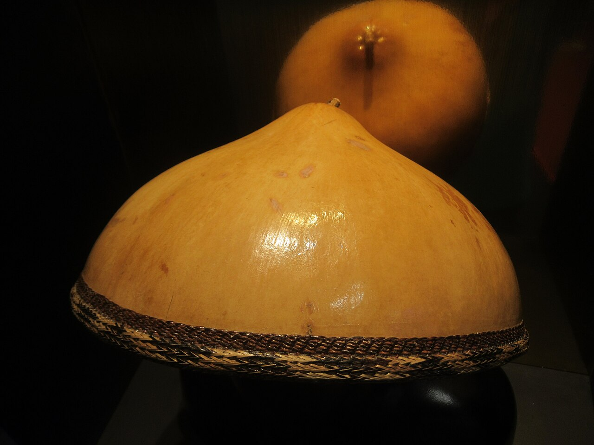

Portrait of a Lady
1542 • Oil on Canvas
Portrait of a Lady
1542 • Oil on Canvas
Portrait of a Lady
1542 • Oil on Canvas
Teofilo Garcia
1941 - now • Gamaba Artist for Tabungaw Hat
Teofilo Garcia
A renowned Filipino master artisan from San Quintin, Abra, known for crafting the tabungaw (or kattukong), a traditional, weather-resistant hat made from native gourds.
He was named a National Living Treasure (Gawad sa Manlilikha ng Bayan) in 2012 for his dedication to preserving this unique, functional, and eco-friendly headgear craft.
Teofilo
Garcia

The Oblation
1935 • Statue
Tabungaw Hat
The Tabungaw gourd hat is made from a big round gourd that is unique to the Philippines, which are part of the Cucurbitaceae family.
Tabungaw hats became such a symbol of revolution that the Spanish stopped Ilocanos from wearing them.
The Dream
1932 • Oil on Canvas
Composition X
1939 • Oil on Canvas
The Builders
1928 • Oil on Canvas
Blood Compact
1965 • Mural